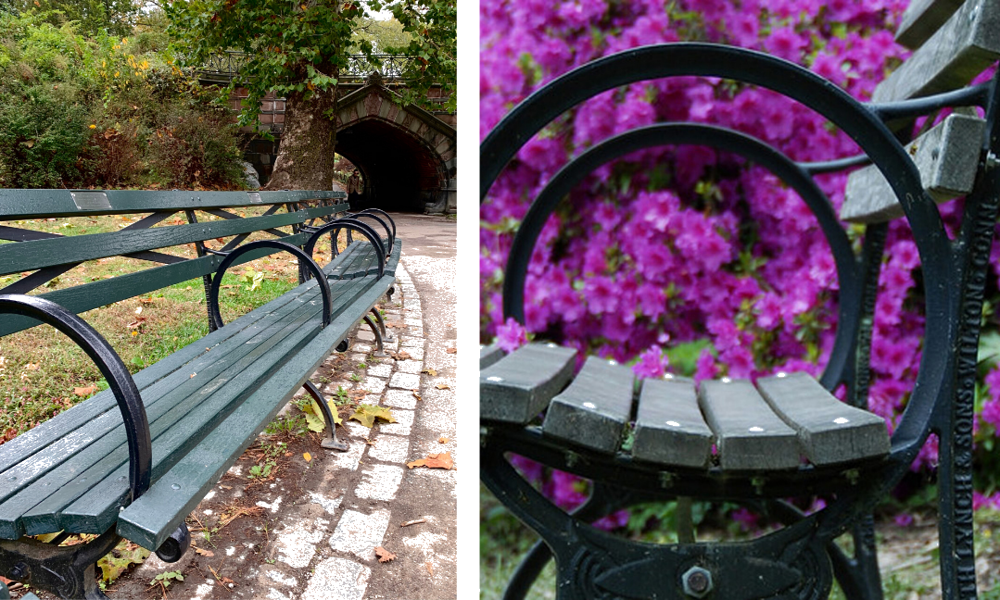

The World Fair Bench (1939- present)
This cast-iron and wood bench was designed by the Central Park Conservatory department in 1937 and has been produced by Kenneth Lynch and Sons ever since. Construction of these benches were initiated by Commissioner Robert Moses.
“This one was made of cast iron, with an Art Deco flair, but its basic shape harked back to the hoop arms of the turn of the century.”

There have been very few changes since the inception of the bench, namely more sustainable and affordable materials such as recycled plastic and lumber.